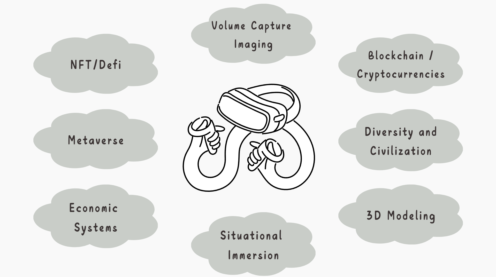
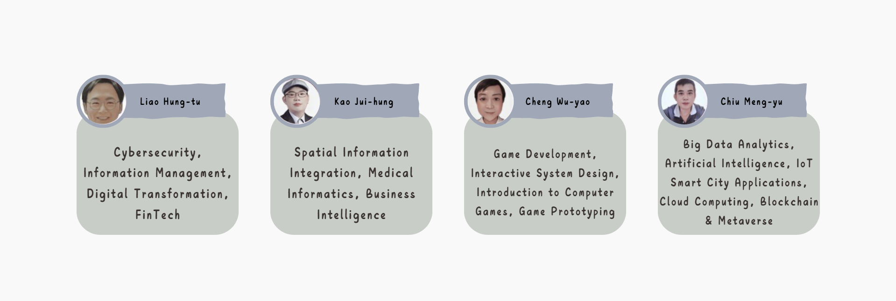

Course Introduction
The metaverse is a virtual parallel universe that offers an environment similar to the real world. Shih Hsin University’s Department of Information Management applies the concept of the metaverse to teaching, providing a brand-new learning experience. It allows students to interact with peers from around the world in the virtual world, enriching their global perspective, in addition to learning in physical classrooms.
When students, professors, and professionals interact in the virtual world, they create a virtual economy and social system, which helps them better understand the operations of the real world. Of course, the metaverse also offers a wide range of information, including industry trends, technological advancements, and job opportunities, helping students better understand the knowledge and skills required in information management as well as the actual demands of the workplace.
In summary, the metaverse is a future trend in educational development with promising prospects. Shih Hsin University’s Department of Information Management has taken a proactive approach in this field, offering a more diverse, dynamic, and varied learning experience, helping students better learn and master knowledge and skills, and ultimately enhancing their employment competitiveness.
Course Structure

Navigator
